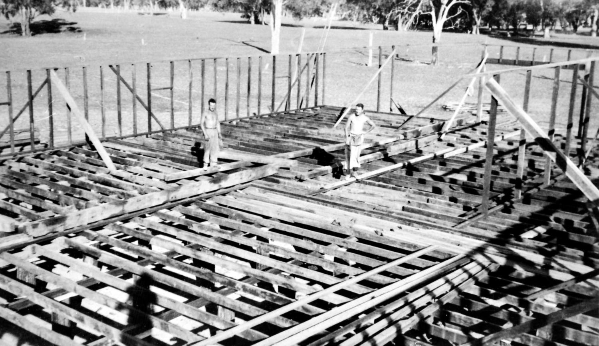
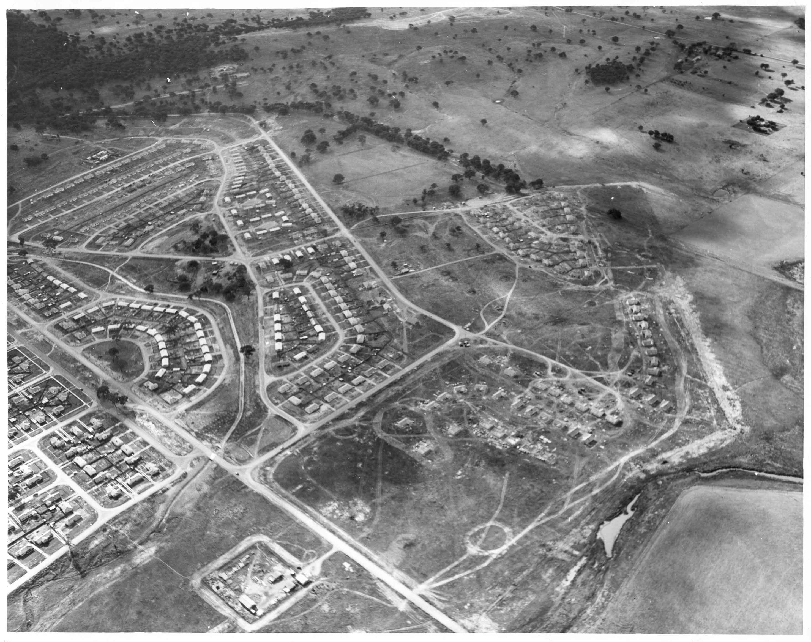

Origins
1.1 The Origins of Canberaa's Tocumwal houses
After the bombing of Darwin, the United States and Australia made joint plans for Australian inland defence. The Tocumwal airfield was the largest and first of several large airfields planned for construction in relation to the the line of possible Japanese advance. It was built by the Australian Government (Australian Civil Construction Corps and Allied Works Council) on behalf of the United States Army Air Force between February and April 1942. Five thousand people were involved in the construction of the base which was designed to stage bombing raids and reconnaisance flights, as well as take the role of the first training centre in the South-West Pacific for Liberators. Not long after the 'houses' were erected at the end of the building process, the Battle of the Coral Sea halted the Japanese advance and the USAAF decided to move north to Townsville. The Royal Australian air force officially took over the running of Tocumwal in November 1942, establishing it as a hospital and training base.
(Information from Thematic Study: WWII Aerodromes and associated structures in New South Wales, New South Wales Heritage Office, 2000, and military historians Dr Darryl McIntyre and Noel Flanagan)
1.2 The Tocumwal air force base
My family was aware of Tocumwal and its houses long before they became a feature of the streets of O'Connor. My father, Hartley Hollier, was a serving member of the RAAF from 1936-46 and was actually stationed at Tocumwal when the 'Tocumwal houses' were in that town, newly-built and functioning as they had been designed to function.
The Tocumwal air force base was part of the 'Brisbane Line' strategy of World War II. The Brisbane Line was, in fact, an imaginary line drawn on a map connecting Perth with Brisbane. This effectively divided Australia into two segments. The thinking was that we could afford to lose everything above the line, if needs be, to an invading Japanese force - but we would fight to the death to keep everything below it. For this reason various air force bases were strategically placed just inside the 'line', and Tocumwal was one of these locations.
What we know as the 'Tocumwal houses' were built in Tocumwal for the purpose of setting up the air force base. The whole base was designed to look like any Australian country town, and was virtually all accommodated in the 'houses'. It had roads and streets laid out and I imagine that the aircraft hangars and workshops might have looked like the local school or public hall. The houses had no partitioning inside and most of them served as sleeping quarters for the men. They had a half-hourly bus service and the bus would pick up personnel and drop them where they needed to go. The vital purpose for designing a base in such a form was that, should enemy surveillance aircraft fly overhead, all that they would see would be an ordinary town.
After the end of World War II the air force base at Tocumwal was no longer needed. I imagine there was at first a feeling of, 'What on earth are we going to do with all this lot?' But, concurrently, Canberra was developing fast by the mid-1940s and someone had the brilliant idea (or so it would seem, with hindsight) of bringing the houses and re-erecting them here. Sylvia Hollier (contributed 1996)
House Listings
When we came there wasn't a thing out this way. There was a big black stump over the street there Right in the middle of the two way street And the children used to play in it and get covered with charcoal. The best baby sitter I ever had was an old magpie that used to sit up on a big dead stump on the corner of Miller and Macarthur Every time the children got to the corner it used to swoop down on them It knew! We used to push the pram with the kids in to do the shopping at Civic - and bring it home in the pram Usually the day after you got paid It was the only shopping centreMr Cosier was at the corner store After he sold up and went away they built the whole front right along There was a little clothing shop - Macdonald's - past the chemist shop - where (Marinetti's) is now We used to use it quite a lot.
Reference Images
| Image |
Name and Year |
Description |
 |
Unfinished Tocumwal Houses (1971) |
The houses nearing completion from the move. Here, the houses have yet to have the plumbing and insulation sorted out, but the main structure is complete. |
|  |
Workers building the Tocumwal Houses (1970) |
The workers are working on rebuilding the houses using the plans for the tocumwal houses. |
 |
Finished Tocumwal houses (1975) |
The houses in this area are complete, and some of the families have moved in to them thankful for having a place to stay at. |
|  |
Finished Tocumwal Neighbourhood (1976) |
The entire neighbourhood has been completed, and all the families have moved into the houses to create a new community here in Canberra. Of course, O'Connor is thriving in Canberra to this day. |